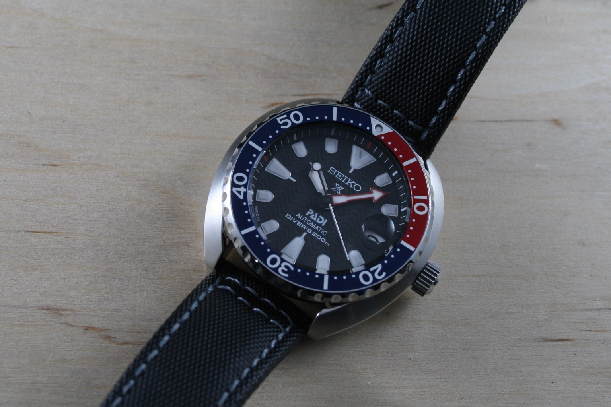

42.3 mm case / 20 mm lug width / 13 mm thick / 42.5 mm lug to lug / hardlex / 200m water resistance / hacking / automatic / hand-winding

To replace my SKX013, I decided on a whim (which essentially means I only researched it for about a month) to nab the SRPC41J1 from Gnomon Watches. At just under $400, I found the Mini Turtle to be a more than reasonable value considering it’s competition from brands like Hamilton, Squale, and Steinhart. And combined with a smaller case design similar in wearability to the SKX013, Seiko knew what they were doing with this one.
Strap Replacement
Right out of the box I traded the included blue rubber strap for a grey-stitch patterned sailcloth band. Rubber to me always feels a bit stuffy and since I plan to wear this guy mainly in the summer, I felt sailcloth to be the natural choice.
Of all of the canvas/sailcloth style straps I’ve tried, I prefer the straps offered at iWantAStrap.com. Due to the lack of leather backing, these bands are far more breathable than the multi-layered offerings from the likes of Hadley-Roma and Hirsch. They do take awhile to break in, but in my opinion they are a perfect combination of texture and length; rugged and canvas-like, they lie somewhere between a short and medium length which avoids the issue of too much excess after buckling it on the wrist.
SKX013 Comparison
So why did I buy it? Well, for me this fits into the same casual/dive category as the SKX013 that I had been wearing for a few years; it’s a little wider, but just as the SKX007 and Turtle look more at home on a larger wrist, the SKX013 and Mini Turtle are more compact solutions of the same size class.
- Hand-winding – As the SKX013 was a go-to casual piece in my collection, I frequently had to do the “Seiko shuffle” to get it going after the power reserve had run its course, so I wanted something that I could just wind a few times and go.
- No Day Window – I hate day/date complications and I hate setting them. Never, ever have I looked at my watch to find out what day it was. It’s an extraneous feature that also interferes with dial symmetry.
- Size – Although it’s the largest watch in my collection, the Mini Turtle wears wonderfully for a piece above that sweet 40mm spot.
- Made in Japan – Does it really matter? I don’t know. Maybe it just feels better psychologically.
- Dat Dial – With far more attention to detail than the SKX013, the dial is a huge part of what makes this watch look upscale.
If I could sum up the comparison in one word it would be
substantial. The quality of the Turtle feels an order of magnitude more substantial than the SKX013 when it comes to quality of design, movement, and execution. I would recommend the Mini Turtle to anyone looking for a more “posh” version of the SKX013 or to someone looking to downsize their “real” Turtle to something more compact. It’s a great one to just throw on casually and the Pepsi bezel gives it that “summer-watch” feel that goes great with jeans and a t-shirt. I’ve said it before and I’ll say it again: you just can’t go wrong with a Seiko.